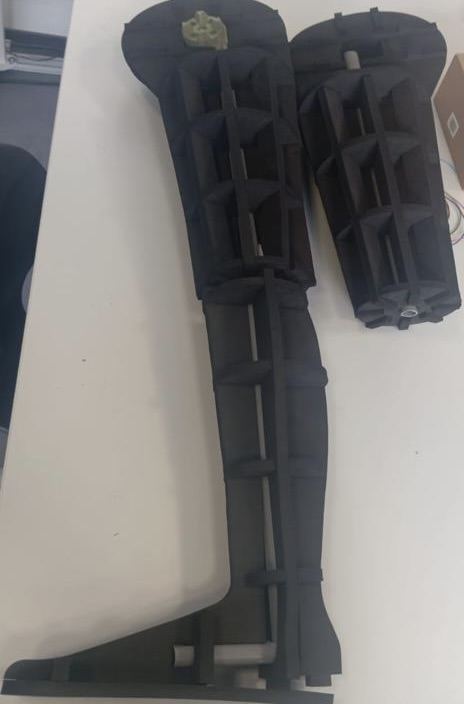
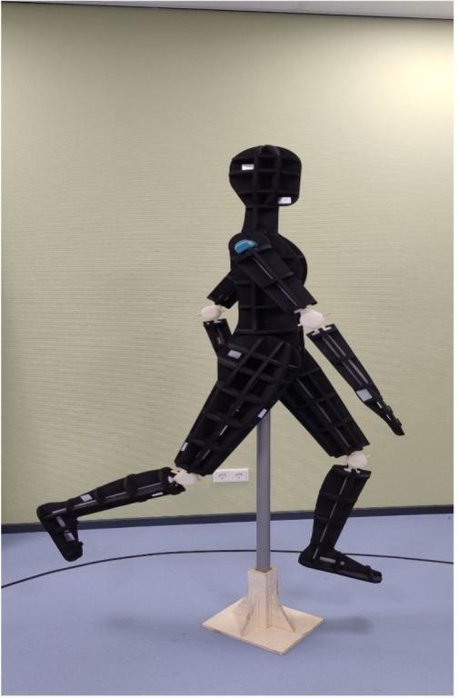
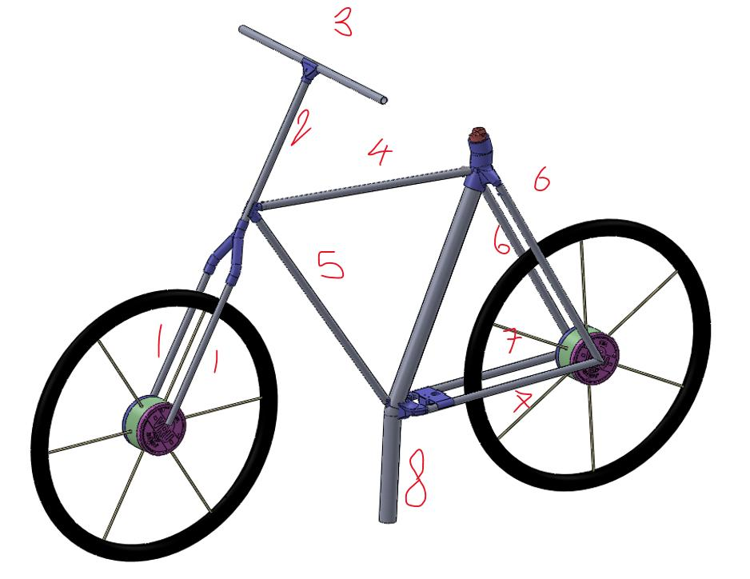
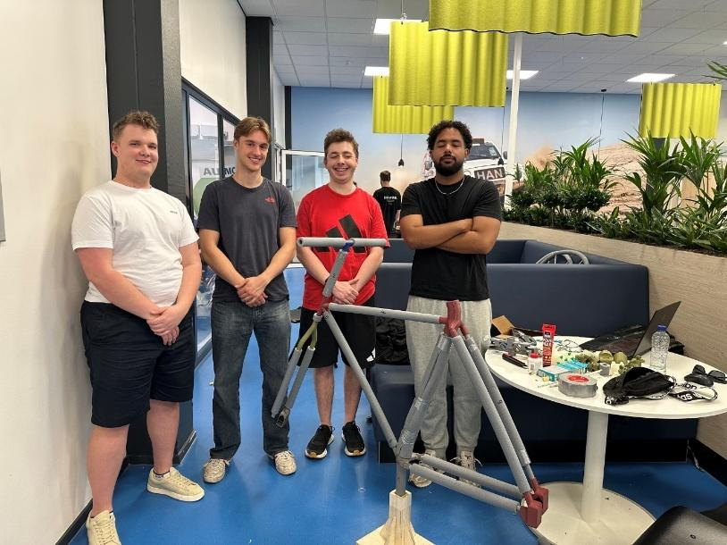
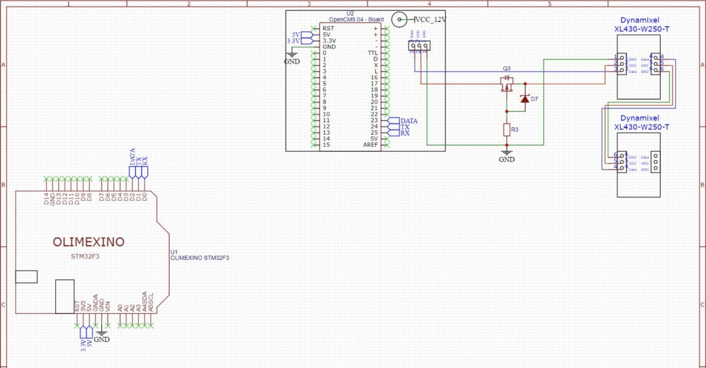

Project Summary
Redesigned a low-cost, reusable cyclist dummy system for ADAS (Advanced Driver Assistance Systems) testing at HAN University. The dummy integrates a PVC skeleton, laser-cut EVA foam panels, and PLA 3D-printed connectors, and is engineered to survive repeated low-speed vehicle impacts without damage. The system combines an articulated dummy with a motorized bicycle frame to mimic realistic cyclist motion.
Articulated Joint Connectors
The dummy utilizes FDM 3D-printed PLA joint connectors and a PVC skeleton. Movable joints are manually adjustable to set walking or cycling postures, with single-plane knee/elbow rotation (90° to 126°) locked via pins. Large parts were split to avoid overhangs exceeding 45° in Cura, minimizing support material and post-processing times.


Motorised Bicycle Frame
Built from lightweight aluminium and PVC tubes cut to NEN-ISO 19206-4 standards, the bicycle frame features 3D-printed joints with a shear breaking-pin design at the wheel hubs (J2 and J8). A 4 mm polymer pin shears on impact to protect frame connections. Three Dynamixel servos are integrated directly into the axles and crank, eliminating mechanical transmissions.


Control & Schematic
An Olimexino STM32F3 microcontroller and OpenCM 485 shield drive two parallel motor chains: one for bicycle rolling motion and another for dummy limb articulation. Standard Dynamixel cabling was replaced with custom-fabricated 3-wire lines and magnetic connectors to enable quick assembly and prevent polarity errors.

Summary & Outcomes
The final dummy system met all functional requirements, achieving a total weight under 30 kg and assembly/disassembly under 3 minutes. The magnetic quick-release joint system successfully releases on impact and was validated across 50+ impact cycles within a strict €297 budget.